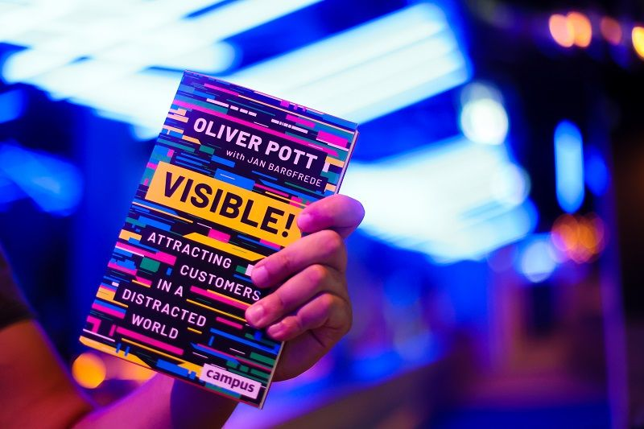
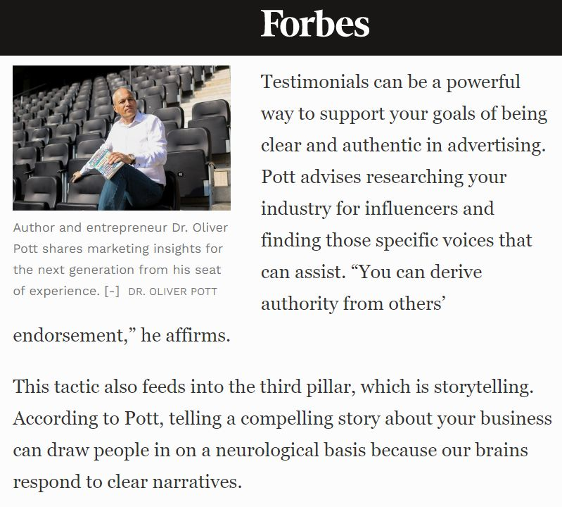
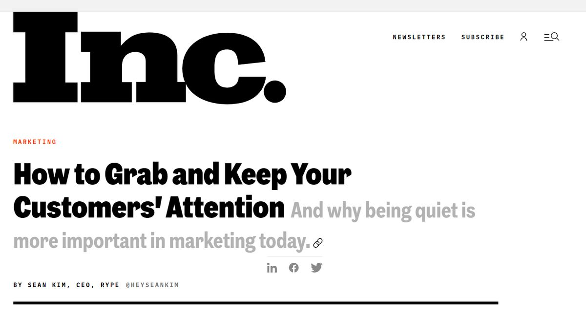
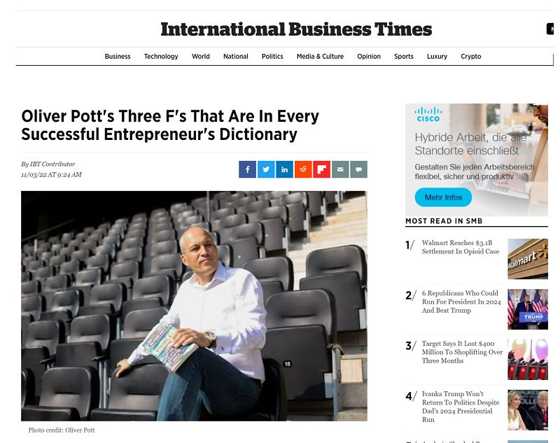
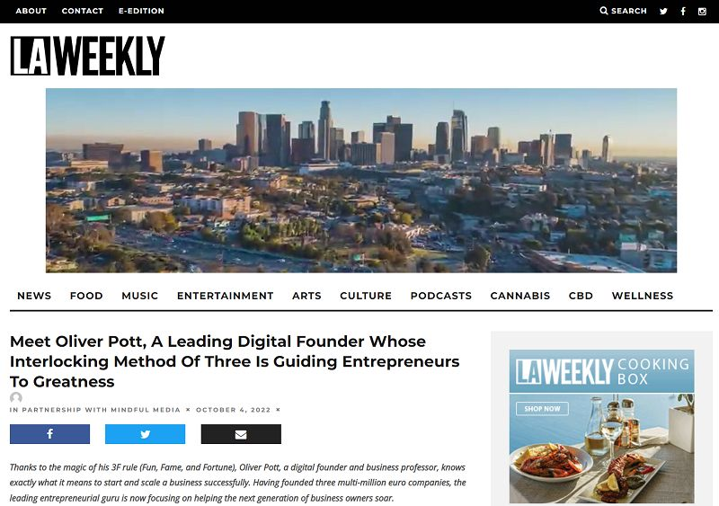
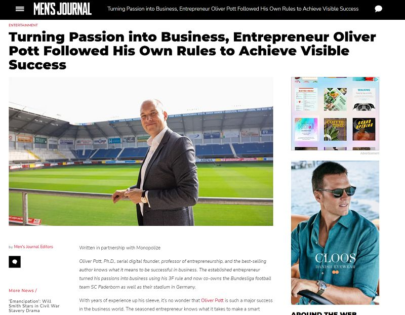
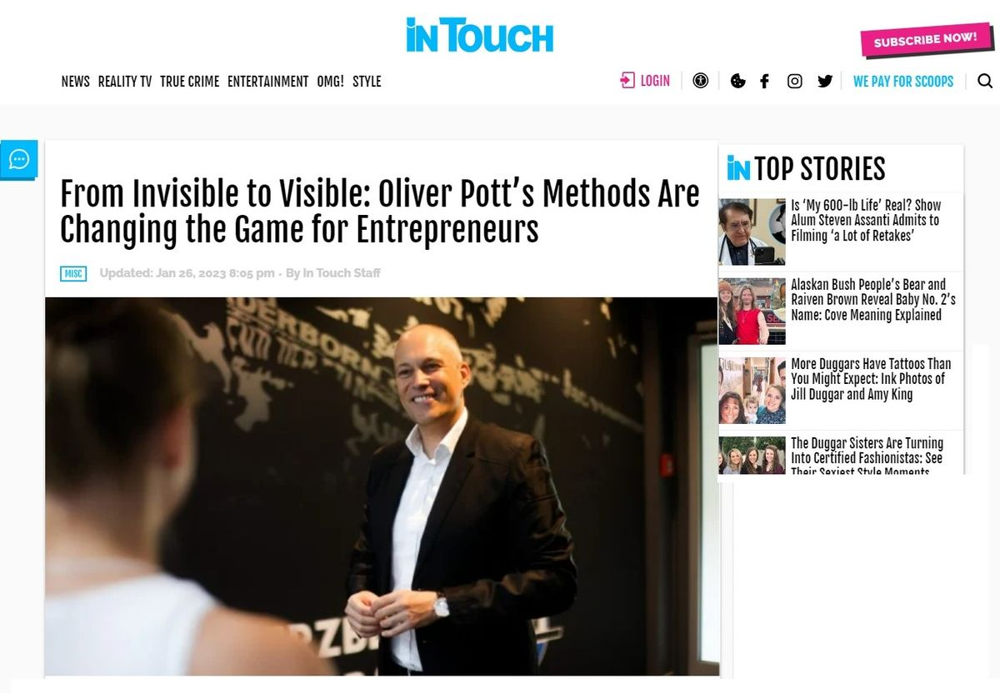
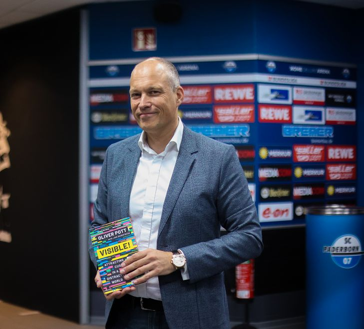

New Bestselling Book
If You’re Invisible, You Might as Well Not Exist
“Dr. Oliver Pott knows a thing or two about growing companies and increasing visibility.” (Forbes US)
Visible! · Campus New York
This Book is about Attracting Customers in a Distracting World
- We are living in a visibility economy: products and services that aren’t visible go unnoticed by potential customers
- But whereas visibility was once a costly commodity that came at the price of big-budget advertising campaigns on TV and in print media, high-value visibility can now be reliably obtained on a shoestring.
- This book shows readers the six steps they have to take to create smart visibility for the business in order to reach key customers and increase sales significantly
- And anyone who has internalized the three dimensions of value-oriented visibility — relevance, authority, and storytelling — will have no need to resort to loud and attention-grabbing campaigns in the future
“Visible! Attracting Customers in a Distracted World” by Oliver Pott, Campus New York

Press
Dr. Oliver Pott Featured In The US Press

Forbes
„Dr. Oliver Pott knows a thing or two about growing companies and increasing visibility. He has been referred to as one of the most successful Internet entrepreneurs in the German-speaking world. Pott has been growing European Internet technology businesses since 1999.“Read full article here

Inc.
„How to Grab and Keep Your Customers' Attention – and why being quiet is more important in marketing today. Dr. Oliver Pott talks about it in VISIBLE!“Read full article here

International Business Times
„Business maverick and seasoned entrepreneur Oliver Pott says there are actually three f-words that should be in every business owner's dictionary, and no, the one you are thinking of is not part of the trio.“Read full article here

Los Angeles Weekly
„Meet Oliver Pott, A Leading Digital Founder Whose Interlocking Method Of Three Is Guiding Entrepreneurs To Greatness“Read full article here

Men's Journal
„With years of experience up his sleeve, it’s no wonder that Oliver Pott is such a major success in the business world.“Read full article here

Intouch
„Pott holds the title of Professor in Paderborn and has been teaching business start-ups and internet marketing for 12 years. With his extensive experience and knowledge in the field, Pott wrote a book to help others navigate this tricky industry.“Read full article here

About
Meet Oliver Pott
Oliver Pott, Ph.D., is a serial digital founder and owned and operated several businesses around the world. He received his doctorate in neurochemistry from the Humboldt University of Berlin.
Oliver worked with hundreds of US companies, mostly tech corporations, to bring their products to Europe.
Having founded three multi-million euro companies, co-owning the Bundesliga Soccer team SC Paderborn 07 and the soccer stadium itself, it’s easy to see why over 500.000 of entrepreneurs and future business owners are paying attention.
In his newest book, Visible!, Oliver Pott delves into the world of visibility in business and how working smart with quiet visibility can garner a thriving business versus one that focuses on “loud” visibility.